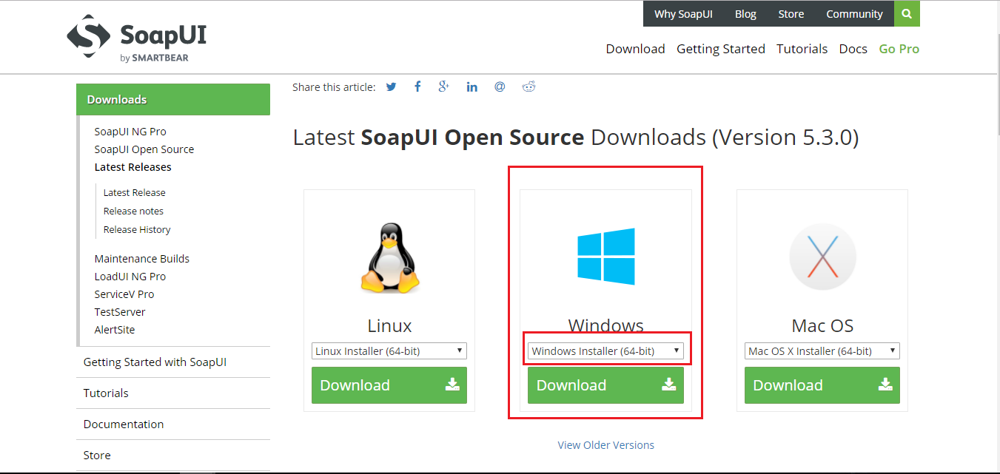
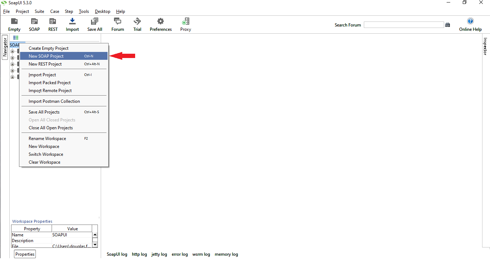
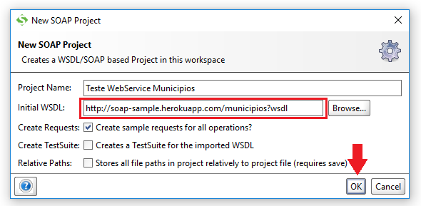
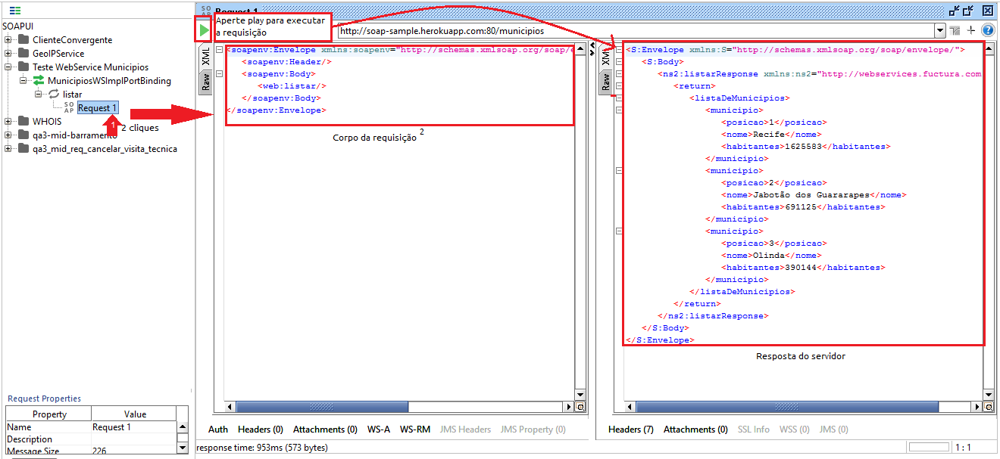

Teste de WebService SOAP com SOAP-UI
Este tutorial tem como objetivo mostrar como testar seu WebService SOAP utilizando a ferramenta SOAP-UI
Para isso, baixe a ferramenta nesta página selecionando a sua plataforma de trabalho
Após baixar e instalar a ferramenta, crie um novo projeto SOAP
Clique com o botão direito do mouse sobre o workspace e clique em "New SOAP Project"
Preencha os dados de nome do projeto e WSDL inicial conforme a imagem:
Feito isso, clique em "Ok" e aguarde o carregamento do WSDL
Após o carregamento aparecerão os dados importados do WSDL, onde é possível selecionar um método e fazer uma requisição contra o mesmo.
Continue nos acompanhando, acesse nossa home e veja o quanto pode aprender com Java.
Até mais!